Hazel 游戏引擎笔记 026：静态库与零警告
本节来源：The Cherno 游戏引擎系列第 26 讲“静态库和零警告”，时长约 22 分 51 秒。
原课程与 Hazel 代码作者：The Cherno。代码参考提交：440d937a。
本文由视频字幕重构、翻译并整理，不是官方教材；术语和代码以原视频及同期 Hazel 仓库为准。
本节目标
上一讲决定把 Hazel 从动态库改成静态库。本讲实际执行转换，并把整个解决方案的警告降到零。
主要任务：
- 把 Hazel 的项目类型从
SharedLib改为StaticLib； - 在所有依赖项目中启用静态 Runtime；
- 移除复制 DLL 的后构建步骤；
- 让
HAZEL_API在静态链接时变为空； - 统一 Debug / Release / Dist 的 Runtime 配置；
- 处理 ImGui 使用旧 CRT 函数产生的警告；
- 处理跨 DLL 边界的 shared_ptr 和模板警告；
- 实现零警告构建；
- 验证 Sandbox 仍能正常运行。
graph TD
A[Shared Library] --> B[Static Runtime]
B --> C[Static Library]
C --> D[清理导出宏]
D --> E[修复 CRT 警告]
E --> F[修复类型转换警告]
F --> G[零警告构建]
G --> H[验证 Sandbox]
📷 把 Hazel 从动态库转换为静态库，并让构建达到零警告
回到原视频 (00:01:05)
1. 转换前的警告状态
(参考时间: 00:03:32)
清理后重新构建，会看到多种警告。
1.1 DLL 边界警告
std::shared_ptr、模板类型和 STL 类型跨越 DLL 边界时，会产生类似警告：
needs to have dll-interface to be used by clients
这些警告不一定意味着代码立即出错，但说明 DLL 边界正在让类型系统与 ABI 变得复杂。
1.2 Runtime 冲突
不同静态库或 DLL 可能链接不同版本的 C++ Runtime，从而产生默认库冲突：
conflicts with use of other libs
Debug Runtime 和 Release Runtime 的内存分配方式可能不同。如果某个模块用 Debug Runtime 分配内存，再由 Release Runtime 释放，可能导致崩溃或内存破坏。
1.3 CRT 弃用警告
ImGui 示例代码中使用了：
strcpy
sprintf
这类旧 CRT 函数，编译器会建议使用带缓冲区大小的安全版本，例如 strcpy_s、sprintf_s。
ImGui 是第三方代码，因此 Hazel 不应直接大面积修改它，而是考虑在构建 ImGui 的翻译单元中抑制警告。
graph TD
A[构建警告] --> B[DLL 边界]
A --> C[Runtime 版本冲突]
A --> D[旧 CRT 函数]
A --> E[参数类型转换]
B --> F[转为静态库后消失]
C --> F
D --> G[局部或项目级宏]
E --> H[显式 cast]
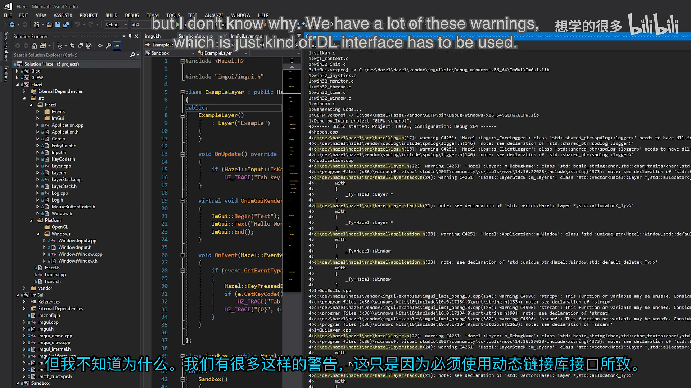
📷 转换前存在 DLL 边界、Runtime 冲突和旧 CRT 函数等警告
回到原视频 (00:03:52)
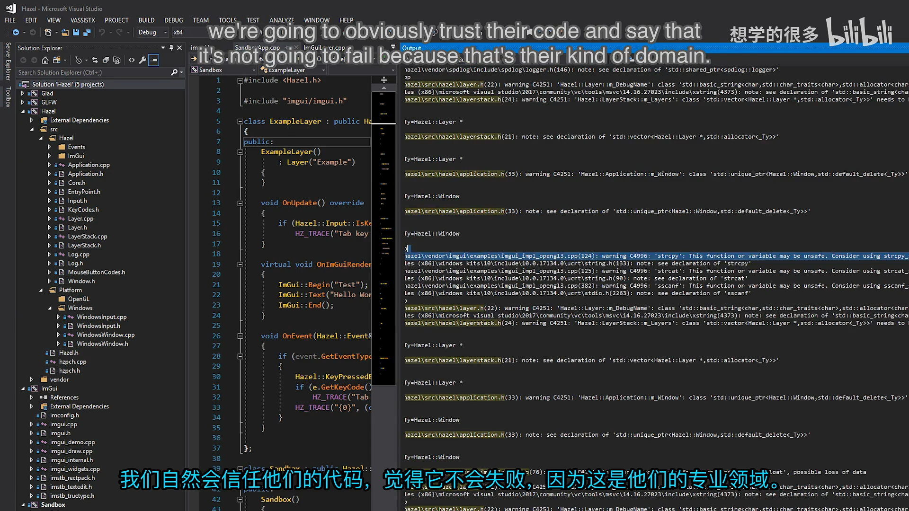
📷 std::shared_ptr 与模板跨 DLL 边界产生大量警告
回到原视频 (00:04:33)
2. Premake：把 Hazel 改为静态库
(参考时间: 00:06:30)
原配置：
project "Hazel"
kind "SharedLib"
staticruntime "off"
新配置：
project "Hazel"
kind "StaticLib"
language "C++"
cppdialect "C++17"
staticruntime "on"
核心就是把 SharedLib 改为 StaticLib，并启用静态 Runtime。
2.1 为什么静态库应使用静态 Runtime
DLL 是独立最终模块，需要自带 Runtime 实现。不同 DLL 可能使用：
- Debug Runtime；
- Release Runtime；
- 不同版本或不同配置的 CRT。
静态库最终会进入同一个 EXE 链接过程，因此更适合同样使用静态 Runtime：
Hazel.lib + ImGui.lib + GLFW.lib + Glad.lib
-> Sandbox.exe
-> 单一 Runtime
flowchart TD
A[多个 DLL] --> B[每个模块可能链接自己的 Runtime]
B --> C[版本/配置不一致]
C --> D[跨边界分配/释放风险]
E[多个静态库] --> F[最终统一链接进 EXE]
F --> G[单一 Runtime]
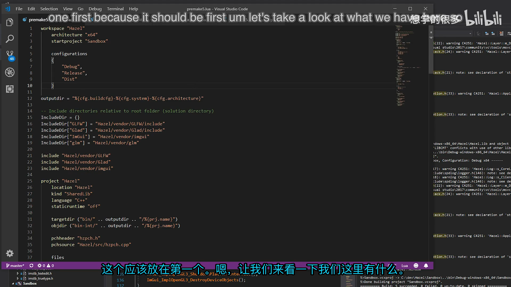
📷 Hazel 改为 StaticLib 并启用 staticruntime
回到原视频 (00:06:30)
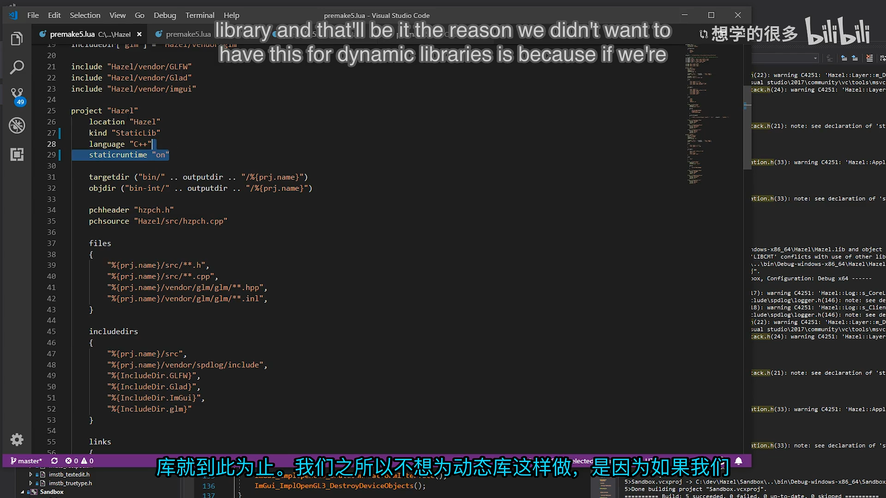
📷 静态 Runtime 让最终可执行文件使用统一的 C++ Runtime
回到原视频 (00:07:02)
3. 清理 Premake 配置
(参考时间: 00:08:04)
3.1 移动通用设置
cppdialect 不只是 Windows 设置，因此从 filter "system:windows" 移到项目通用设置。
3.2 删除 DLL 复制步骤
原后构建命令用于复制 Hazel DLL 到 Sandbox：
postbuildcommands
{
"{COPY} ... Hazel.dll ... Sandbox/"
}
静态库不再生成 Hazel.dll，因此后构建复制步骤应删除。
3.3 统一配置写法
filter "configurations:Debug"
defines "HZ_DEBUG"
runtime "Debug"
symbols "on"
filter "configurations:Release"
defines "HZ_RELEASE"
runtime "Release"
optimize "on"
filter "configurations:Dist"
defines "HZ_DIST"
runtime "Release"
optimize "on"
配置设计：
| 配置 | Runtime | 符号 | 优化 |
|---|---|---|---|
| Debug | Debug | On | Off |
| Release | Release | Off | On |
| Dist | Release | Off | On |
flowchart LR
A[Debug] --> B[Runtime Debug + symbols on]
C[Release] --> D[Runtime Release + optimize on]
E[Dist] --> F[Runtime Release + optimize on]
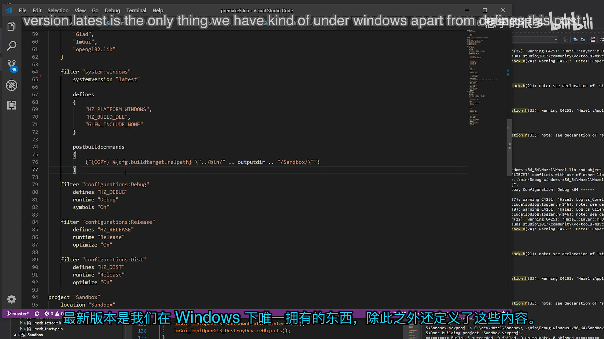
📷 移除 DLL 后构建步骤，并按 Premake 文档统一配置
回到原视频 (00:08:04)
4. 同步依赖项目的 Premake
(参考时间: 00:09:47)
依赖项目也需要统一 Runtime 配置：
- GLFW；
- Glad；
- ImGui。
4.1 GLFW
- 保持
StaticLib； staticruntime "on"；- 只保留 Debug / Release；
- Debug 生成符号；
- Release 开启优化；
- 删除无意义的 Windows 编译参数。
4.2 Glad
Glad 同样是 C 静态库：
project "Glad"
kind "StaticLib"
language "C"
staticruntime "on"
并为 Debug / Release 分别设置 runtime、symbols 和 optimize。
4.3 ImGui
ImGui 也改为静态 Runtime，并统一 C++17 与静态链接设置。
所有依赖最终都必须使用相同的 Runtime 选择，否则链接冲突仍可能出现。
graph TD
A[统一静态 Runtime] --> B[GLFW]
A --> C[Glad]
A --> D[ImGui]
A --> E[Hazel]
B --> F[Sandbox.exe]
C --> F
D --> F
E --> F
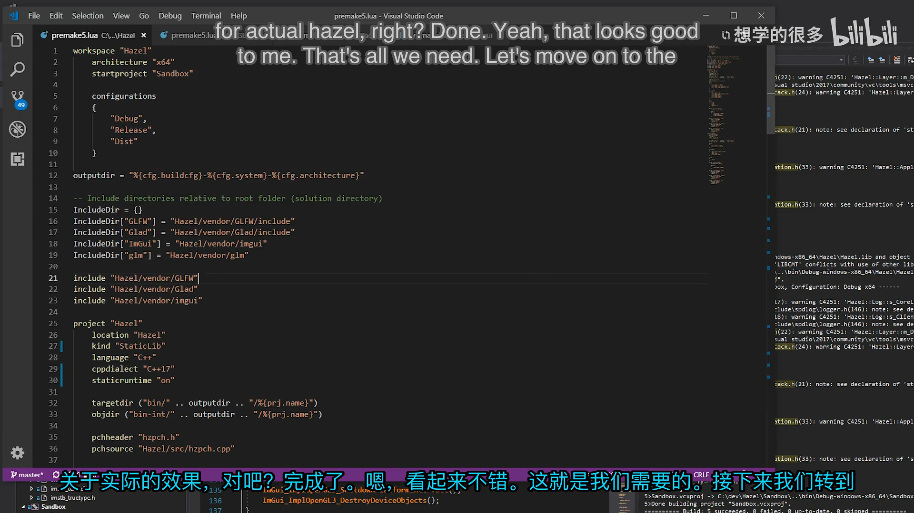
📷 GLFW、Glad 和 ImGui 的 Premake 配置统一使用静态 Runtime
回到原视频 (00:09:47)
5. 重新生成与验证静态库
(参考时间: 00:14:00)
执行：
GenerateProjects.bat
回到 Visual Studio 后重新加载解决方案，确认 Hazel 的配置类型已经从：
DynamicLibrary
变为：
StaticLibrary
接着执行“超干净构建”：
- 删除
bin； - 删除
bin-int； - 重新生成工程；
- 重新构建整个解决方案。
flowchart TD
A[运行 Premake] --> B[重新加载 VS 工程]
B --> C{Hazel 是 StaticLibrary?}
C -- 否 --> D[检查 Premake]
C -- 是 --> E[删除 bin / bin-int]
E --> F[重新构建]
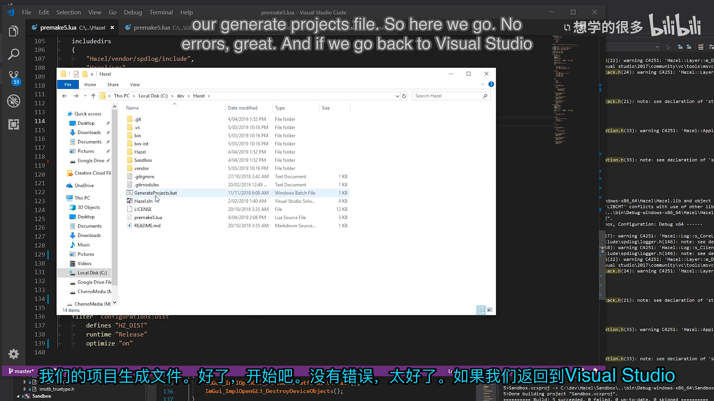
📷 重新生成项目后 Hazel 显示为 StaticLibrary
回到原视频 (00:14:00)
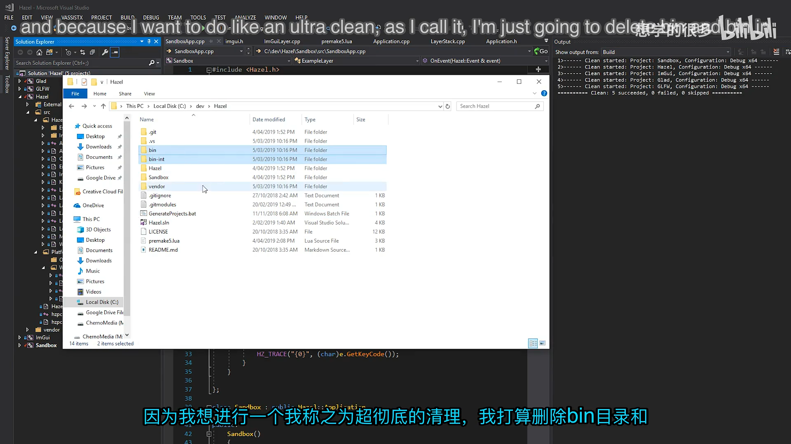
📷 删除 bin 与 bin-int 后进行超干净构建
回到原视频 (00:14:20)
6. Core.h：动态链接与静态链接兼容
(参考时间: 00:15:00)
旧代码始终根据 HZ_BUILD_DLL 选择导入或导出：
#ifdef HZ_BUILD_DLL
#define HAZEL_API __declspec(dllexport)
#else
#define HAZEL_API __declspec(dllimport)
#endif
静态库不需要这些属性。新增 HZ_DYNAMIC_LINK 条件：
#ifdef HZ_PLATFORM_WINDOWS
#if HZ_DYNAMIC_LINK
#ifdef HZ_BUILD_DLL
#define HAZEL_API __declspec(dllexport)
#else
#define HAZEL_API __declspec(dllimport)
#endif
#else
#define HAZEL_API
#endif
#else
#error Hazel only supports Windows!
#endif
当 HZ_DYNAMIC_LINK 没有定义时，HAZEL_API 展开为空，因此类声明不再需要导入导出语义。
flowchart TD
A[HAZEL_API] --> B{HZ_DYNAMIC_LINK}
B -- 是 --> C[dllexport / dllimport]
B -- 否 --> D[空宏]
D --> E[静态库无需导出属性]
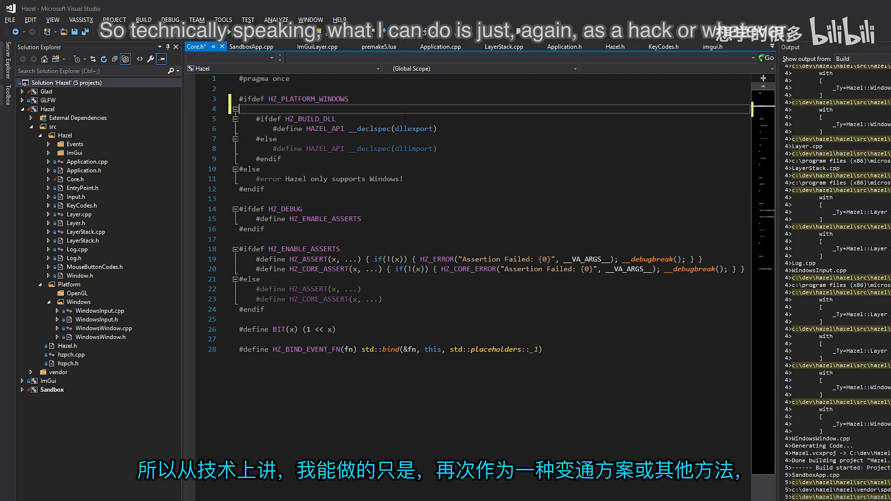
📷 在 Core.h 中用 HZ_DYNAMIC_LINK 控制导出宏
回到原视频 (00:15:00)
6.1 为什么不直接删除 HAZEL_API
未来仍然可能出现动态加载的模块，例如：
- 游戏代码 DLL；
- 编辑器模块；
- 热替换插件。
静态 Hazel 核心库与“动态游戏模块”并不冲突。保留 HZ_DYNAMIC_LINK 开关，可以避免当前阶段进行大规模全项目搜索替换。
7. 修复剩余警告
(参考时间: 00:16:10)
7.1 整数到浮点转换
ImGuiLayer 把窗口宽高从 unsigned int 转成 float：
io.DisplaySize = ImVec2(
(float)app.GetWindow().GetWidth(),
(float)app.GetWindow().GetHeight());
显式 cast 清楚表达这是有意转换，也消除 C++ 警告。
7.2 第三方 CRT 弃用函数
ImGui 的 OpenGL3 示例使用 strcpy、sprintf 等旧函数。Hazel 不想修改第三方代码，因此可以定义：
#define _CRT_SECURE_NO_WARNINGS
第一次尝试把宏放在 ImGuiBuild.cpp 中，但由于预编译头已经包含 string.h，弃用属性在宏生效前就已经出现，警告没有完全消失。
flowchart TD
A[在 ImGuiBuild.cpp 定义宏] --> B[预编译头先包含 string.h]
B --> C[弃用函数声明已进入编译]
C --> D[警告仍然存在]
D --> E[改为项目级定义]
最后把 _CRT_SECURE_NO_WARNINGS 放到 Hazel 项目的通用定义中：
defines
{
"_CRT_SECURE_NO_WARNINGS"
}
这会让整个 Hazel 项目都不再报告这些 CRT 弃用警告。视频承认这不是最细粒度方案，但能保持第三方代码不改动。
编者说明：如果这些函数出现在 Hazel 自有代码中，更合理的做法通常是改用带边界检查的安全版本；本项目的宏主要是为第三方 ImGui 代码服务。
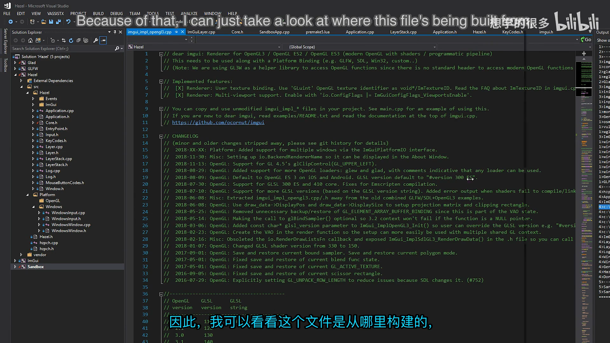
📷 先尝试只对 ImGuiBuild.cpp 局部抑制 CRT 警告
回到原视频 (00:17:55)
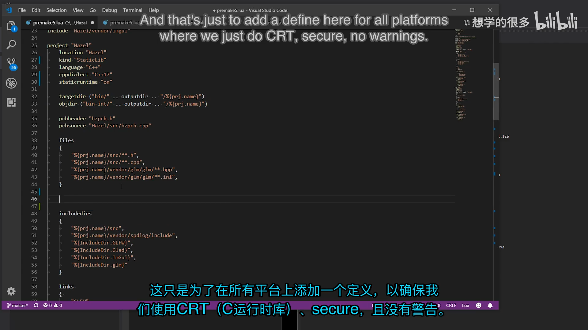
📷 由于 PCH 已包含 string.h，最终改为项目级 CRT 警告宏
回到原视频 (00:20:40)
8. 零警告构建
(参考时间: 00:21:16)
再次清理并构建后：
Build succeeded
0 Errors
0 Warnings
Sandbox 启动后仍能正常工作，说明静态库转换没有破坏原功能。
视频还提到可以选择打开“Treat Warnings as Errors”，但担心后期开发中被临时警告阻塞，因此当前没有启用。
graph LR
A[静态库] --> B[统一 Runtime]
B --> C[清理 DLL 边界]
C --> D[修复显式转换]
D --> E[处理 CRT 警告]
E --> F[0 Errors / 0 Warnings]
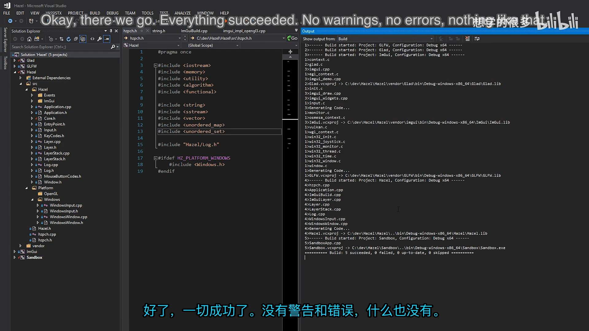
📷 最终构建成功，错误和警告均为零
回到原视频 (00:21:16)
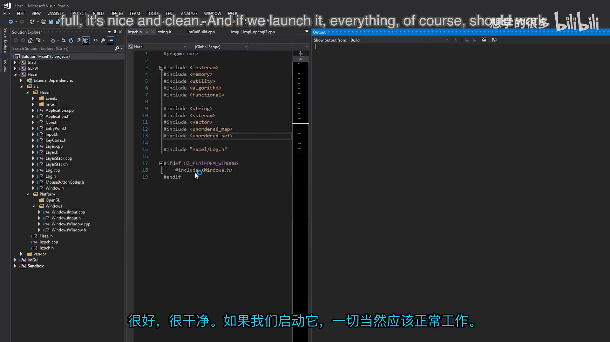
📷 零警告构建后 Sandbox 仍可正常运行
回到原视频 (00:21:21)
9. 本节结论
本讲完成了 Hazel 架构的一次重要简化：
- 把 Hazel 从
SharedLib改为StaticLib； - 在 Hazel、GLFW、Glad、ImGui 中统一启用静态 Runtime；
- 删除复制 DLL 的后构建步骤；
- 简化 Premake 与 Visual Studio 工程配置；
- 用
HZ_DYNAMIC_LINK控制HAZEL_API； - 静态构建时让导出宏变为空；
- 修复整数到浮点转换警告；
- 解决 ImGui 旧 CRT 函数的弃用警告；
- 通过超干净构建得到零错误、零警告；
- 保留未来动态加载游戏模块或插件的可能。
静态链接让 Hazel 核心库更简单、更统一，也为后续 RendererAPI 类的大量新增代码减少了 DLL 边界负担。
下一阶段将在这个干净的构建基础上正式开始 OpenGL Render Context、Swap Chain 和第一个渲染结果。